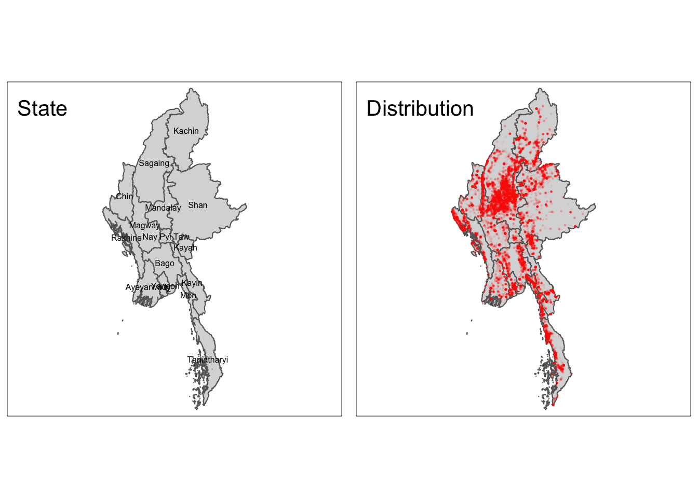

pacman::p_load(tmap, sf, raster, spatstat, maptools, sp, tidyverse)Take-home Exercise 2
Take-home
In this exercise, We will be analyzing armed conflict data in Myanmar, using spatial point pattern analysis to understand the distribution and relationships between conflict events. We’ll also create maps to visualize the results and interpret the spatial patterns.
1. Introduction
1.1 Context
In 2024 armed conflict continues to be a devastating global issue, with millions of people affected each year. Recent years have seen a surge in conflicts, driven by factors such as political instability, regional tensions, and resource scarcity. Myanmar, in particular, has experienced significant armed conflict in recent years, including the 2021 military coup and subsequent violence.
TODO: Lit review
1.2 Objectives
- Analyze the spatial distribution of armed conflict events in Myanmar.
- Identify patterns and trends in the temporal distribution of conflict events.
- Explore the relationship between conflict events and geographic features (e.g., administrative boundaries, natural resources).
- Identify potential hotspots of conflict activity.
- Provide insights for policymakers and humanitarian organizations working to address the conflict in Myanmar.
2. Setup
2.1 Loading Packages
In this project we will be using the following packages:
tmap: A package for creating thematic maps in R. It provides a simple and flexible interface for customizing maps and exporting them in various formats.sf: A package for simple feature data, which is a modern standard for representing geographic features. It provides efficient data structures and functions for spatial operations.raster: A package for working with raster data, such as images and digital elevation models. It offers tools for reading, writing, manipulating, and analyzing raster data.spatstat: A package for spatial point pattern analysis. It provides functions for analyzing the distribution and relationships between points in a study area.maptools: A package for reading and writing various spatial data formats, including shapefiles and KML. It also provides tools for converting between different spatial data structures.sp: A package for spatial data in R. It provides classes and functions for representing and manipulating spatial data, such as points, lines, and polygons.tidyverse: A collection of R packages designed for data manipulation, visualization, and analysis. It includes packages like dplyr, ggplot2, and tidyr, which are commonly used in data science workflows.
2.2 Loading Data
The dataset used in this analysis is sourced from the Armed Conflict Location & Event Data (ACLED) database. It contains information on various types of armed conflict events, including Battles, Explosion/Remote violence, Strategic developments, Protest, Riots, and Violence against civilians. The data covers the period from January 2021 to June 2024 and provides specific details such as event date, location coordinates, actor information, and more.
# Read CSV files
acled_2021_23 <- read_csv("data/2021-2023-Myanmar.csv")
acled_2024 <- read_csv("data/2024-Myanmar.csv")Next we load Myanmar Boundary from Humanitarian Data Exchange - Get demographics - Get town center
# Read Myanmar Boundary
mym_sf <- st_read(dsn = "data/geospatial",
layer = "mmr_polbnda_adm1_250k_mimu_1") %>%
st_transform(crs = 32647)Reading layer `mmr_polbnda_adm1_250k_mimu_1' from data source
`/Users/jeffery/Projects/Y4S1/IS415/S0methingSimple/IS415-GAA/take-home_ex/ex01/data/geospatial'
using driver `ESRI Shapefile'
Simple feature collection with 15 features and 6 fields
Geometry type: MULTIPOLYGON
Dimension: XY
Bounding box: xmin: 92.1721 ymin: 9.696844 xmax: 101.17 ymax: 28.54554
Geodetic CRS: WGS 843. Data Wrangling and Exploration
3.1 CRS Projection & Formatting
The initial step involved reading the ACLED data into R and converting it into a sf data frame, specifying the longitude and latitude columns as coordinates and the WGS84 coordinate reference system (CRS). To ensure consistency with the administrative boundary data, the CRS was projected to EPSG:32647.
Additional data cleaning and preparation steps were performed, including handling missing values and formatting dates.
# Combine data frames
acled_combined <- bind_rows(acled_2021_23, acled_2024)
# Convert to SF object
acled_full_sf <- acled_combined %>%
st_as_sf(coords = c("longitude", "latitude"), crs = 4326) %>%
st_transform(crs = 32647) %>%
mutate(event_date = dmy(event_date))3.2 Data Cleaning
Next data cleaning
# Check for null values in key columns
na_count <- acled_full_sf %>%
summarise(na_geometry = sum(is.na(geometry)),
na_event_date = sum(is.na(event_date)))
# Check for null values in key columns
duplicate_count <- acled_full_sf %>%
summarise(duplicate_event_id = sum(duplicated(event_id_cnty)),
duplicate_geometry = sum(duplicated(geometry)))
print(na_count)Simple feature collection with 1 feature and 2 fields
Geometry type: MULTIPOINT
Dimension: XY
Bounding box: xmin: -208804.4 ymin: 1103500 xmax: 640934.5 ymax: 3042960
Projected CRS: WGS 84 / UTM zone 47N
# A tibble: 1 × 3
na_geometry na_event_date geometry
<int> <int> <MULTIPOINT [m]>
1 0 0 ((-208804.4 2357274), (-207135 2358896), (-206931.7…print(duplicate_count)Simple feature collection with 1 feature and 2 fields
Geometry type: MULTIPOINT
Dimension: XY
Bounding box: xmin: -208804.4 ymin: 1103500 xmax: 640934.5 ymax: 3042960
Projected CRS: WGS 84 / UTM zone 47N
# A tibble: 1 × 3
duplicate_event_id duplicate_geometry geometry
<int> <int> <MULTIPOINT [m]>
1 0 44101 ((-208804.4 2357274), (-207135 2358896)…3.3 Joining Dataframes
acled_sf <- st_join(acled_full_sf, mym_sf) %>%
select(event_date, event_type, fatalities, ST, admin1, geometry) %>%
rename(state = ST)
print(acled_sf %>% filter(is.na(state)))Simple feature collection with 7 features and 5 fields
Geometry type: POINT
Dimension: XY
Bounding box: xmin: -169820.9 ymin: 1306490 xmax: 479880.3 ymax: 2310507
Projected CRS: WGS 84 / UTM zone 47N
# A tibble: 7 × 6
event_date event_type fatalities state admin1 geometry
* <date> <chr> <dbl> <chr> <chr> <POINT [m]>
1 2023-09-21 Violence against… 0 <NA> Rakhi… (-169820.9 2310507)
2 2023-08-31 Violence against… 0 <NA> Tanin… (479880.3 1306490)
3 2023-05-13 Battles 3 <NA> Kayin (464878.7 1805058)
4 2023-05-12 Battles 2 <NA> Kayin (464878.7 1805058)
5 2023-05-11 Battles 0 <NA> Kayin (464878.7 1805058)
6 2022-07-23 Strategic develo… 0 <NA> Ayeya… (15981.32 1894241)
7 2021-03-22 Violence against… 0 <NA> Rakhi… (-169820.9 2310507)acled_sf <- acled_sf %>%
mutate(state = ifelse(is.na(state), admin1, state)) %>%
select(-admin1)
summary(acled_sf) event_date event_type fatalities state
Min. :2021-01-01 Length:51553 Min. : 0.000 Length:51553
1st Qu.:2021-10-23 Class :character 1st Qu.: 0.000 Class :character
Median :2022-07-28 Mode :character Median : 0.000 Mode :character
Mean :2022-08-25 Mean : 1.062
3rd Qu.:2023-07-05 3rd Qu.: 1.000
Max. :2024-06-30 Max. :201.000
geometry
POINT :51553
epsg:32647 : 0
+proj=utm ...: 0
3.3 Exploratory Data Analysis
The following is an initial plot of the point events on boundary and region map of Myanmar.
tm_shape(mym_sf) + tm_polygons() +
tm_shape(acled_sf) + tm_dots()
ggplot(acled_sf, aes(x = event_date, fill = event_type)) +
geom_histogram(binwidth = 15, position = "stack") +
scale_fill_brewer(palette = "Spectral") +
labs(title = "Stacked Histogram of Event Dates by Event Type",
x = "Event Date",
y = "Count")
acled_by_region <- acled_sf %>%
group_by(state) %>%
summarize(event_count = n())
# Join the event count data with the region polygon data
joined_data <- st_join(mym_sf, acled_by_region)
tm_shape(joined_data) +
tm_polygons(col = "event_count", style = "jenks", palette = "YlOrRd") +
tm_layout(title = "Event Count by Region")
ggplot(acled_sf, aes(x = event_type, y = fatalities)) +
geom_point(color = "darkorange") +
labs(title = "Relationship Between Fatalities and Event Type",
x = "Event Type",
y = "Fatalities") +
coord_flip() +
theme(axis.text.y = element_text(angle = 45, hjust = 1))
event_type_counts <- acled_sf %>%
count(event_type)
ggplot(event_type_counts, aes(x = "", y = n, fill = event_type)) +
geom_bar(stat = "identity", color = "white") +
geom_text(aes(label = n), position = position_stack(vjust = 0.5)) +
coord_polar(theta = "y") +
scale_fill_brewer(palette = "Spectral") +
labs(title = "Distribution of Event Types") +
theme_void()
4. Spatial Point Pattern Analysis
4.1 Preparation
acled_ppp <- as.ppp(acled_sf)
acled_pppMarked planar point pattern: 51553 points
marks are dates, of class 'Date'
window: rectangle = [-208804.4, 640934.5] x [1103500.1, 3042960.3] unitsmym_outer_sf <- mym_sf %>% # select the central parts
st_buffer(0.5) %>% # make a buffer of half a meter around all parts (to avoid slivers)
st_union()
mym_owin <- as.owin(mym_outer_sf)acled_ppp <- acled_ppp[mym_owin]acled_ppp_km <- rescale(acled_ppp, 1000, "km")
plot(acled_ppp_km)4.2 First Order Analysis
4.2.1 Compute Kernel Density
# acled_ppp_km_bw_ppl <- bw.ppl(acled_ppp_km) # 2.325089acled_ppp_kde = density(acled_ppp_km,
sigma = 2.3,
edge = FALSE,
kernel = "gaussian")
plot(acled_ppp_kde)Questions
Analytics - How to use analysis results such as clustering to interpret? should we include other dimension of data - How to work on the 10 quarters meaningfully (For spatial point pattern analysis) - Pick region to do 2nd order analysis
Technical - How to speed up KDE analysis with 51k record? sampling - How to deal with the 7 points outside of the region
Group the ACLED data by quarter and calculate KDE surfaces using
st_density.Experiment with different bandwidths and kernel functions to find the most appropriate settings.
Create separate KDE layers for each quarter.
4.3 Second Order Analysis
Calculate Spatial Autocorrelation Measures:
Use functions from
spatstator other spatial analysis packages to calculate measures like Moran’s I or Geary’s C.Assess whether conflict events are clustered, dispersed, or randomly distributed.
Consider using edge correction methods to account for boundary effects
Analyze Ripley’s K-function:
Calculate Ripley’s K-function to measure the intensity of points within a given distance of an existing point.
Interpret the results to identify clustering or dispersion patterns.
5. Spatial-Temporal Analysis
Create Quarterly Spatio-Temporal KDE Layers:
Combine the temporal dimension (quarter) with the spatial coordinates to create spatio-temporal KDE surfaces
Explore different methods for incorporating time into the KDE calculation
Analyze Spatio-Temporal Autocorrelation:
Use spatio-temporal autocorrelation measures to assess the spatial and temporal relationships between conflict events.
Consider using methods like spatio-temporal G-functions or spatio-temporal Moran’s I.